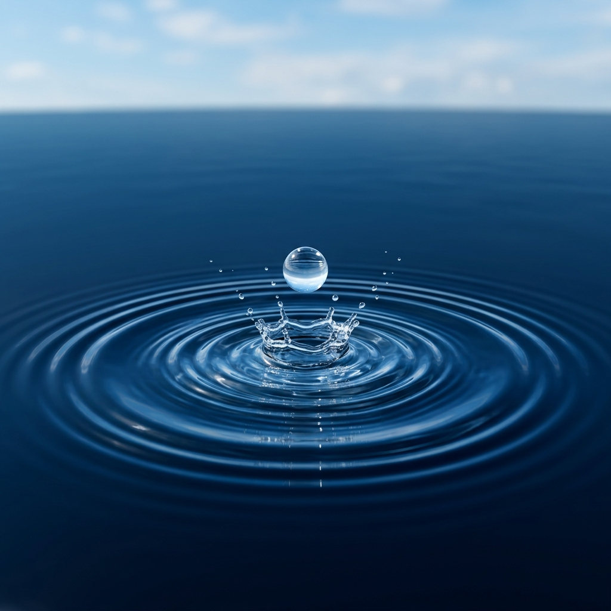
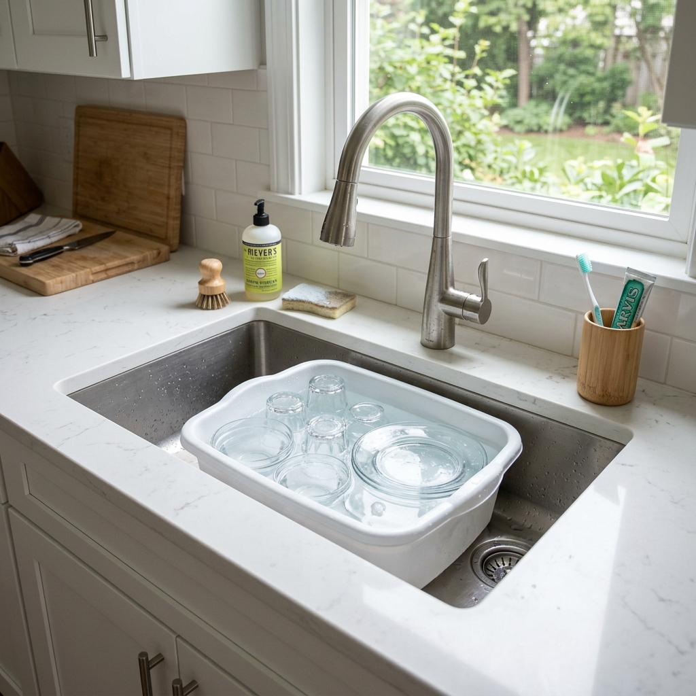
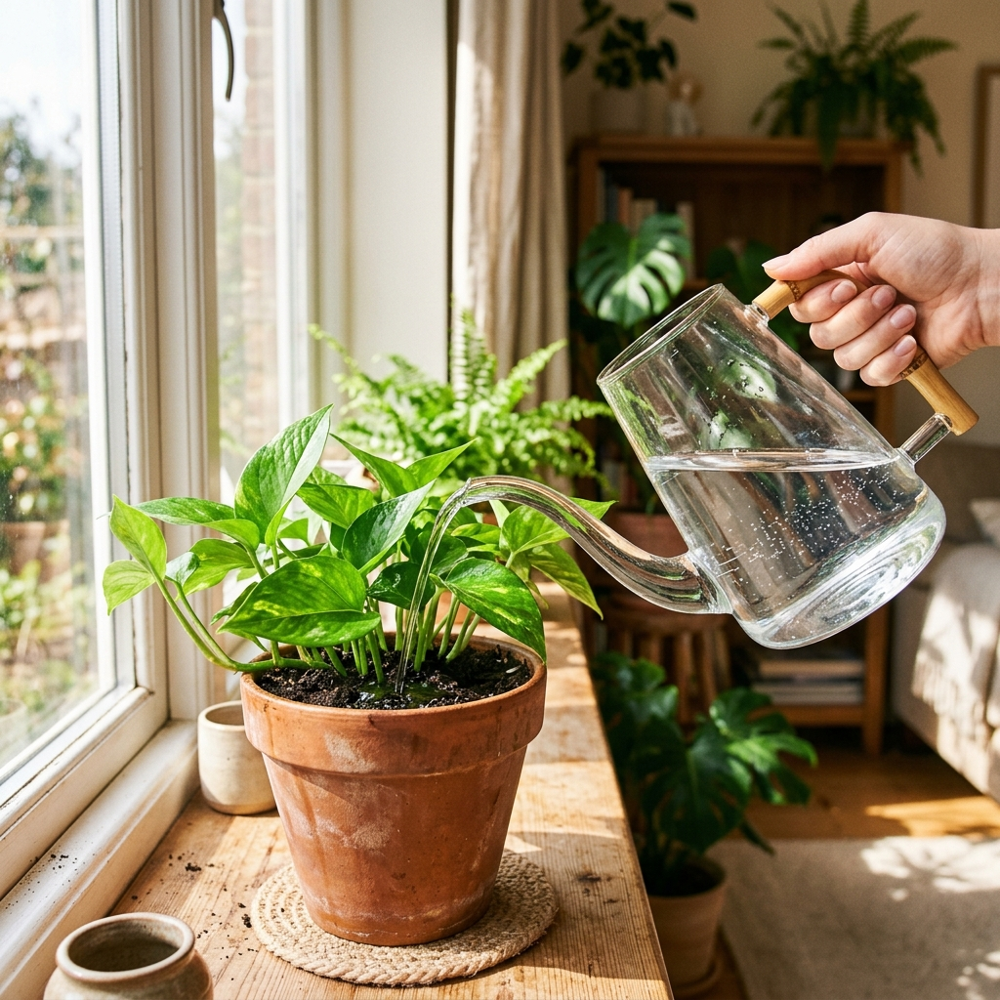
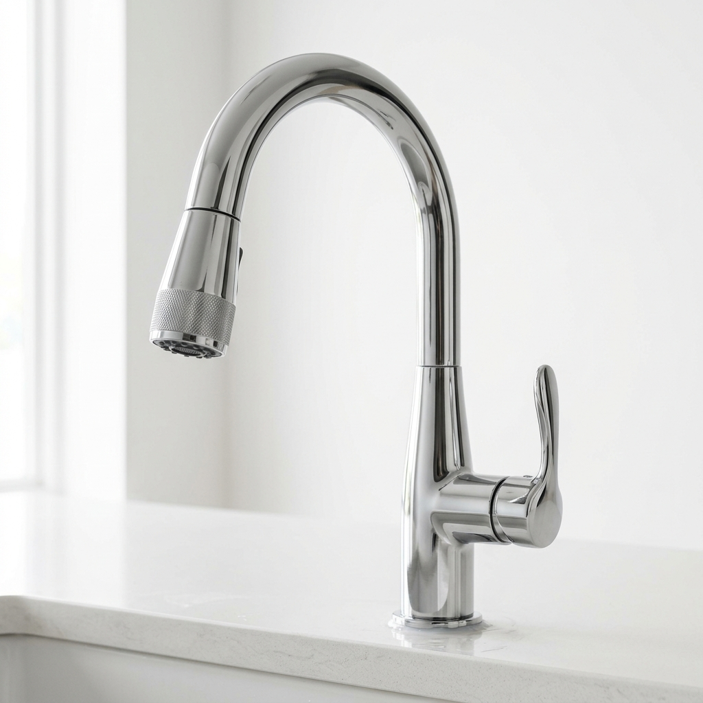
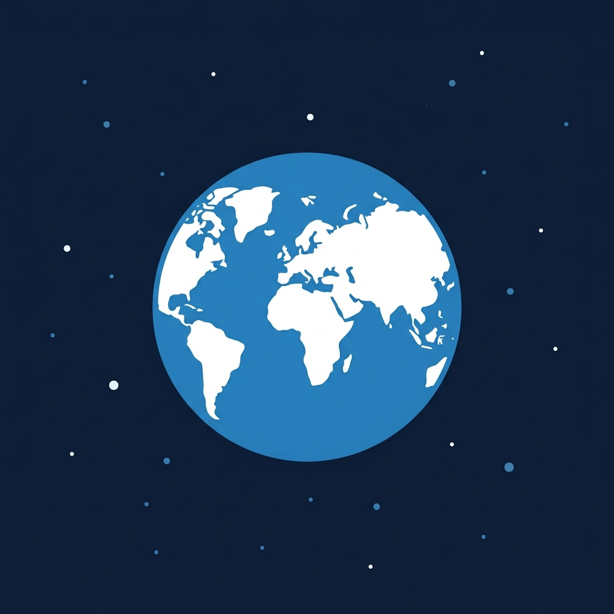
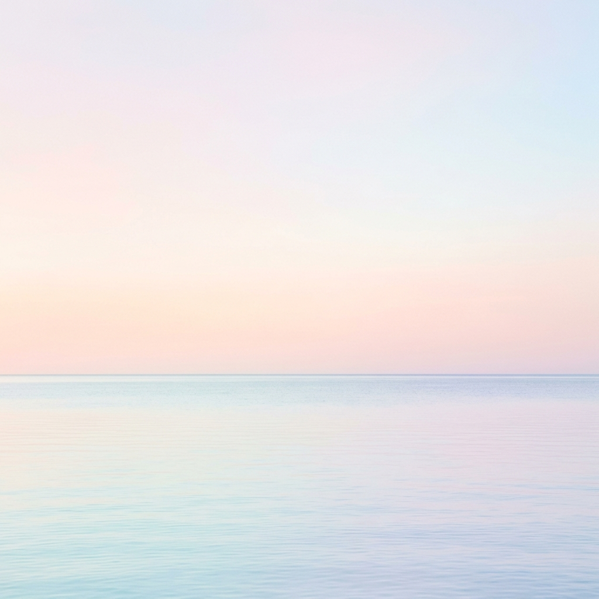

양치컵을 쓰지 않으면
6리터의 물이 그대로 낭비됩니다.

흐르는 물을 잠그는 것만으로도
필요한 물의 70%를 아낄 수 있습니다.

과일을 씻은 물이나 쌀뜨물은
화분의 화초에게 양보하세요.
수도꼭지나 양변기 구매 시,
'절수설비 인증 마크'를
꼭 확인하세요.

하루 10L를 아끼면, 우리 동네는
매일 수만 리터의 깨끗한 물을 지킵니다.

지금 바로 수도꼭지를
완전히 잠그는 것부터 시작해 주세요.
